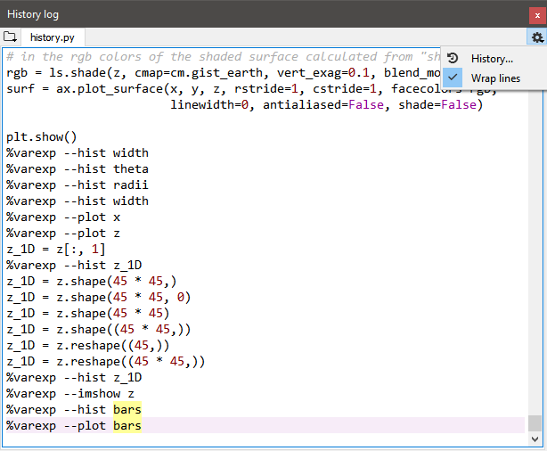

History Log¶
With the History Log pane, you can view an automatically de-duplicated, time-stamped list of every command you enter into any connected IPython Console.
Using the History Log¶
Navigating the History Log is very straightforward. Each session is marked by a date and time-stamp, making it easy to remember when you executed a certain command. Statements can be selected and copied from the context menu or with the normal system shortcuts. Just like in the editor, highlighting a word or phrase displays all other occurrences, and full syntax highlighting is also supported. Finally, the top-right options menu (Gear icon) allows you to toggle soft-wrapping of long lines (Wrap lines), and set the number of commands the History Log should remember (History).
The History Log is stored in the .spyder-py3 (Python 3) or spyder (Python 2) directory in your user home folder (by default, C:/Users/username on Windows, /Users/username for macOS, and typically /home/username on GNU/Linux).
You might need to show invisible files in order to see it on a non-Windows operating system.